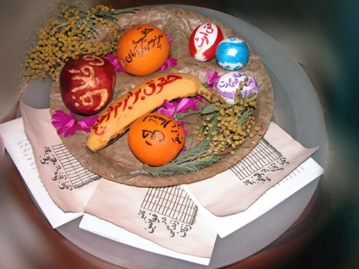
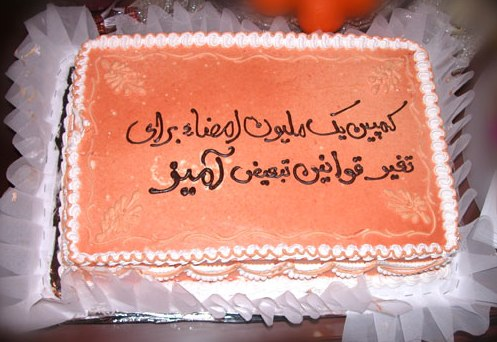

|
|

عید دیدنی برخی از اعضای کمپین یک میلیون امضا در سال 86
جلوه جواهری
چهار شنبه8 فروردین 1386
کمیته داوطلبان کمپین یک میلیون امضا سال 86 را با تقسیم خود به گروه های کوچکتر آغاز کرد. در مراسم عید دیدنی نوروزی کمیته داوطلبان و کمیته رسانه کمپین که با حضور 60 نفر از اعضا برگزار شد، گروه های جدیدی را از دل خود به وجود آورد.
برخی از فعالان کمپین که در آخرین پنج شنبه سال 85 دور هم جمع شده و فعالیت های شش ماهه شان را ارزیابی کرده بودند، 7 فروردین ماه در مراسم نوروزی و عید دیدنی خود، راهکارهای عملیاتی کردن پیشنهادات ارائه شده در آن نشست را بررسی کردند.
کمپین یک میلیون امضا حالا با گذشت 6 ماه از فعالیتش یک خانواده بزرگ شده و علاوه بر پیشبرد اهداف برابری خواهانه خود، یک حلقه قوی دوستی و همدلی نیز به وجود آورده است. با تکیه بر همین همدلی و دوستی است که برگزاری برنامه ها و نشست های مختلف کمپین با کمترین هزینه ممکن میسر می شود.
مهمانی 60 نفره دیروز که با هزینه 15 نفر از اعضای کمپین برای عید دیدنی گروه داوطلبان و گروه رسانه برگزار شد، نه تنها هیچ هزینه ای از صندوق کمپین خرج نشد، بلکه در این مراسم دویست و پنج هزار تومان نیز با عیدی هایی که اعضای کمپین دادند به موجودی کمپین اضافه شد.
میزبان این مهمانی مثل همیشه منزل یکی از داوطلبان بود و پذیرایی از مهمانان را نیز 15 نفر از اعضا بر عهده گرفته بودند.
چند ساعت اول به دید و بازدید گذشت و حکایت امضا جمع کردن های نوروزی در کنار سفره هفت حقی که بچه ها درست کرده بودند و پس از آن یکی از اعضای کمیته داوطلبان پیشنهاداتی ارائه کرد و در آن جا به بحث گذاشت.

یکی از اعضای کمیته داوطلبان برای کارآمدتر کردن کمیته داوطلبان گفت: « برای اجرای پیشنهادات ارائه شده در آخرین نشست سال گذشته، نیاز به 4 گروه کاری جدید مطرح شد.»
بر اساس مباحث مطرح شده در این برنامه، گروه کارگاه آموزشی برای اعضای فعال کمپین، گروه خبرنامه، گروه گلگشت و گروه تقسیم افراد برای جمع آوری امضا، از میان اعضای کمیته داوطلبان کمپین شکل گرفت.
«گروه کارگاه آموزشی برای اعضای فعال کمپین» که با هدف توانمندسازی فعالان کمپین و در پی درخواست داوطلبان در طی ماه های گذشته راه اندازی می شود، برگزاری چهار کارگاه نوشتن، نظریه های فمینیستی، اینترنت، پشتیبانی و حقوق شهروندی را در دستور کار خود قرار داده است.
«گروه خبرنامه» که در نشست 24 اسفند ماه کلید خورده بود فعالیت اش را حول انتشار خبرنامه داخلی کمپین برای اطلاع رسانی به اعضای کمپین و با نام "نامه کمپین یک میلیون امضا" سازمان داده است. این گروه اولین خبرنامه را آماده کرده است و با مشخص شدن مسئولان تولید، پخش و نگهداری خبرنامه قرار است به صورت منظم به فعالیت خود ادامه دهد.
گروه بعدی که در سال جدید فعال خواهد شد گروه برگزاری گلگشت است. این گلگشت ها که قرار است هر دو ماه یکبار برگزار شود هم بهانه ای برای آشنایی بیشتر اعضای کمپین با یکدیگر است تا یک روز کامل را در کنار هم بوده و در محیطی آرام تجربه هایشان را در اختیار هم بگذارند و هم یک برنامه تفریحی کم هزینه را برای زنان تدارک می بیند.
گروه «تقسیم افراد برای جمع آوری امضا» نیز برای برنامه ریزی جهت جمع آوری امضا به صورت گروهی در سطح شهر ایجاد شده و قرار است با تعیین روزهایی به نام «روز امضا» روش های خلاق و متنوعی برای جمع آوری امضا پیشنهاد کند. اولین روز امضا در سال جدید نیز سیزده فروردین ماه است. قرار است مسئولان این کمیته ایمیل و تلفن خود را جهت تماس کلیه اعضایی که خواهان جمع آوری امضاء در سطح شهر هستند اعلام کند.

پس از این برنامه ریزی ها و مشخص شدن مسئولان هر گروه کمی هم در مورد روال کار و انتقادات و پیشنهادات اعضا گفتگو شد و بعد از آن تماشای کلیپ جدید کمپین با صدای محسن نامجو و جشن تولدی کوچک برای اعضای کمپین که در فروردین ماه متولد شده بودند برگزار شد. در این جشن تولد به جای آن که بر روی کیک متولدین فروردین ماه نام آنان ذکر شود، نام کمپین بر روی آن نقش بسته بود و شیرینی پزهایی که زحمت کیک را کشیده بودند، چند ساعت قبل موقع تحویل کیک امضای خودشان را پای بیانیه کمپین گذاشته بودند.